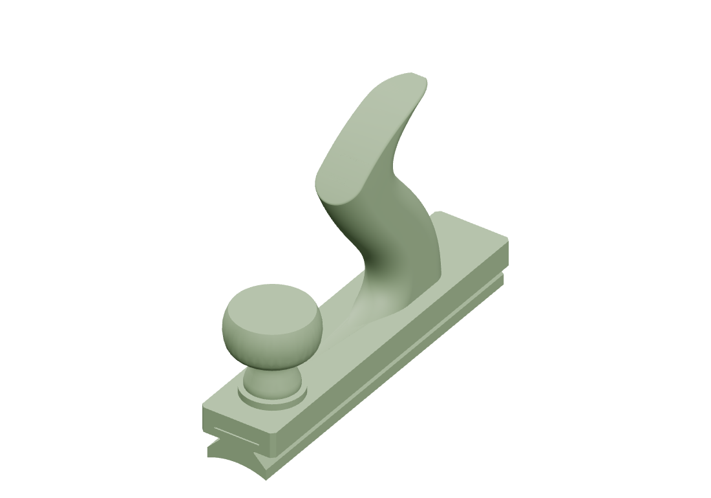

Sanding plane
Sanding plane
Parts

Print & assembly notes
P1S · PLA · 0.4 mm nozzle · 0.20 mm layers · 5 walls · 15% infill. Carrier side-down with supports; shoe rail-cap-down/profile-up and knob crown-down without supports. Use the configured Bambu project.
Validation
Tapered coupon passed a physical test without shifting. Full-size loading and long-term wear remain untested.
Project files & revisions
Earlier revisions and alternatives.
Additional model files 21
3MFmodels/profile-jig-final-print-plate.3mf691 KBSTEPmodels/profile-jig-profile-up-coupon-body.step2.1 MBSTEPmodels/profile-jig-profile-up-full-carrier-core.step2.1 MB3MFmodels/profile-jig-profile-up-full-exploded-preview.3mf692 KB3MFmodels/profile-jig-profile-up-full-section-preview.3mf379 KB3MFmodels/profile-jig-profile-up-full-unlocked-preview.3mf693 KB3MFmodels/profile-jig-taper-lock-coupon-body.3mf42 KBSTEPmodels/profile-jig-taper-lock-coupon-body.step2.1 MBSTLmodels/profile-jig-taper-lock-coupon-body.stl153 KB3MFmodels/profile-jig-taper-lock-coupon-exploded-preview.3mf98 KB3MFmodels/profile-jig-taper-lock-coupon-knob.3mf46 KBSTEPmodels/profile-jig-taper-lock-coupon-knob.step1.9 MBSTLmodels/profile-jig-taper-lock-coupon-knob.stl164 KB3MFmodels/profile-jig-taper-lock-coupon-preview.3mf98 KB3MFmodels/profile-jig-taper-lock-coupon-print-plate.3mf64 KB3MFmodels/profile-jig-taper-lock-coupon-section-preview.3mf56 KB3MFmodels/profile-jig-taper-lock-coupon-shoe.3mf20 KBSTEPmodels/profile-jig-taper-lock-coupon-shoe.step440 KBSTLmodels/profile-jig-taper-lock-coupon-shoe.stl75 KB3MFmodels/profile-jig-taper-lock-coupon-unlocked-preview.3mf98 KBSTLsource/reference-tote/stanley-no5-narrow-original.stl1.8 MB